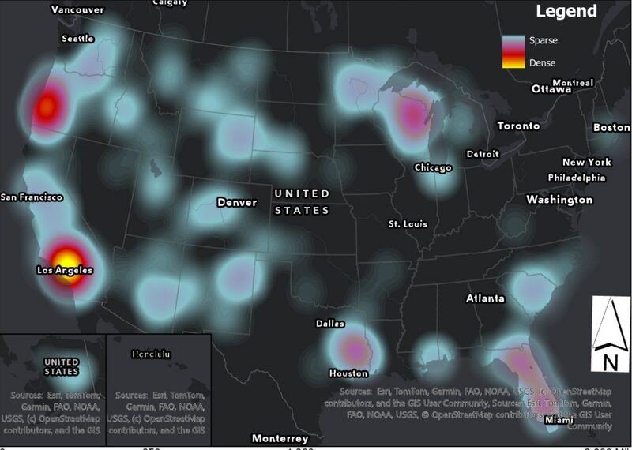
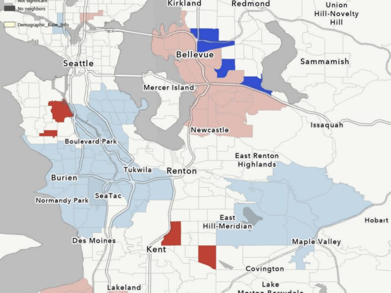
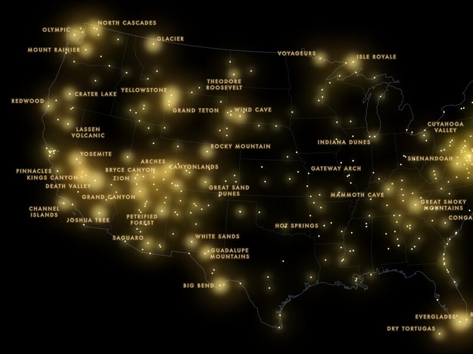

Wildfire Heatmap, 2026
Where US wildfires clustered in the first half of 2026, and how fast discoveries ramped up into June.
Aspiring GIS Analyst · UW Geography
I'm a senior at the University of Washington studying Geography: Data Science. I work in ArcGIS and QGIS to turn raw data into clear, visually appealing maps that viewers can understand at a glance.

Where US wildfires clustered in the first half of 2026, and how fast discoveries ramped up into June.

Where Korean speakers cluster across King County, tested with Global and Local Moran's I.

Every National Park Service site in the lower 48, styled as glowing points to show where the parks cluster.
I'm Noah Kim, a senior at the University of Washington majoring in Geography: Data Science. I'm an aspiring GIS Analyst with a background in ArcGIS and QGIS. I handle data efficiently, from cleaning and organizing it through to analysis, and I design maps that are visually appealing and easy for viewers to comprehend.
I'm currently Lead Data Analyst at Kairo, a photo journaling app I co-founded, where I map geotagged submissions in QGIS to find regional engagement patterns that shape new features.
I'm looking for GIS Analyst roles and would be glad to hear from you.